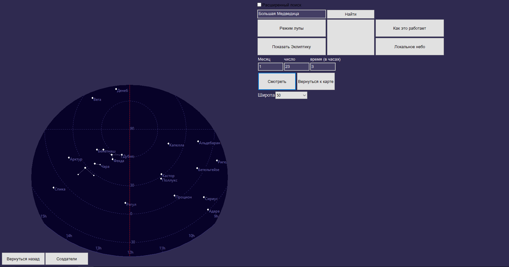
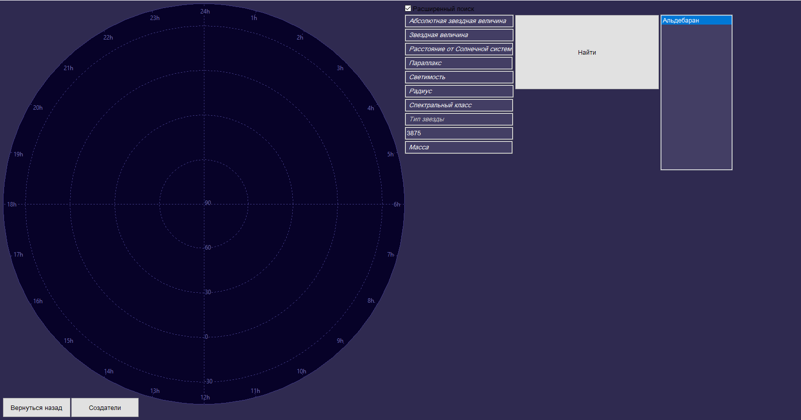

SpaceMapFAZA |
Главная |
Новости |
Руководство |
История обновлений |
Скачать |
Контакты |
|
Руководство пользователяЗдесь вы найдете подробную информацию о работе всех функций Spacemap. Если после прочтения руководства у Вас остались вопросы, просьба обращаться к любому из разработчиков. |
Раздел "Звезды и созвездия" |
Раздел "Солнечная система" |
Поиск созвездий
В Spacemap можно найти информацию о созвездиях северной части небесной сферы, для этого нужно лишь ввести название искомого созвездия в поисковую строку. После этого программа отобразит на карте только это созвездие и выведет список всех звезд, которые входят в него. По щелчку на элемент списка, вы сможете узнать всю информацию о звезде.
|
 |
 |
Локальное небо
Если Вы хотите узнать, какие звезды можно наблюдать при хороших погодных условиях в Вашем регионе, то стоит просто ввести нужную дату и время в поля ввода, и после этого на карте отобразятся все звезды, которые можно увидеть.
|
Лупа
Если Вам сложно понять что находится на том или ином участке карты, или созвездие слишком мало чтобы его увидеть, то Вы можете воспользоваться лупой: после ее активации наведите курсор на непонятное место на карте, и регулируйте разрешение колесиком мышки.
|
 |
Расширенный поиск
В SpaceMap есть функция расширенного поиска, которая позволяет найти все звезды, удволетворяющие введенным пользователем параметрам. При щелчке на подходящую звезду на карте отобразится ее положение и выведется вся информация о ней.
|
|
Language: Russian
|
|
@FAZA 2017
Last update: 15.08.2017
|